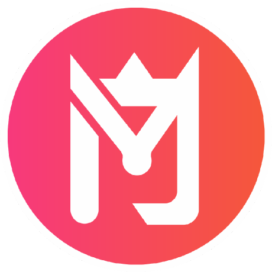

Designer + Frontend Developer yang fokus pada detail, ritme, dan hasil.
Saya membantu brand membangun pengalaman digital yang bersih, cepat, dan terasa personal. Fokus pada UI yang rapi, story yang jelas, dan eksekusi responsif.

Signature Style
Kontras hangat, layout bersih, dan detail microcopy yang membuat pengguna paham tanpa harus membaca panjang.
Skill utama yang sering dipakai
Saya menggabungkan desain dan development agar landing page terasa konsisten dari wireframe sampai deployment.
UI/UX Direction
Audit struktur konten, flow CTA, dan hierarki visual.
Frontend Delivery
HTML/CSS/JS yang clean, scalable, dan cepat.
Brand Storytelling
Copy yang ringkas tapi tetap memiliki karakter.
Project highlight
Beberapa showcase terbaru yang fokus pada konversi, performance, dan visual clarity.
Fintech onboarding refresh
Redesign onboarding untuk meningkatkan trust dan completion rate.
Agency portfolio rebuild
Layout baru dengan fokus pada case studies dan CTA booking.
Product launch site
Landing page dengan detail fitur dan pricing yang tajam.
Mau kolaborasi atau butuh landing page baru?
Kirim brief dan timeline. Saya siap bantu dari discovery sampai page live, termasuk optimasi performa dan struktur konten.
Balasan biasanya dalam 24 jam kerja.